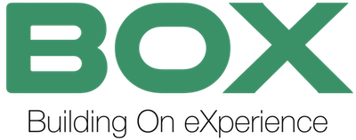

This project is about smart spaces. This research topic has been widely explored in the last year, but there were still some missing tiles and some of them still not connected each other. With this project, we tried to provide consistency to this research area, introducing also what we think are the missing pieces.
Nowadays, considering the continuous development of the sensor and actuator technologies - namely, the Internet-Of-Things - and the incessant growth of their applications in almost all the aspects of our everyday life, the realisation of the so-called smart spaces is some- thing possible and many solutions for their actual implementation are fi- nally available on the market. As defined by EIT ICT Labs, Smart spaces are environments such as apartments, offices, museums, hospitals, schools, university campuses, and outdoor areas that are enabled for the cooperation of different objects (e.g, sensors, actuators, devices and appliances) that have the capability to organize themselves with the goal of providing bet- ter services to customers and citizens, making living more comfortable and efficient. In particular, as it will be, the use of technology is intended to in- crement the user comfort, his safety and the energy efficiency of the smart spaces. The academia and the industry put a lot of effort during the last 30 years in the creation of the enabling hardware technology essential for the creation of the smart building concept. Several challenges have been already addresses, especially from a technical point of view (low power sensors/actuators design, communication protocols, software interfaces de- sign, etc.).
Anyway, this new technologies have also introduced new challenges: within this thesis work, some of the open challenges will be faced, propos- ing new theoretical frameworks, technologies and tools to move forward the actual implementation of smart buildings. In particular, after three decades of works on this topic, there are interesting topics that still to be faced to have smart buildings parts of our daily life: the Occupancy Detection Prob- lem, the Building Programming Problem, Building Behaviour-Description Problem. Within this context, three technologies are proposed: an occu- pancy detection technology based on Bluetooth Low Energy, a building programming interface to let occupants express their own policies and a smart building simulation framework, as an essential tile for forecasting the building behaviour. These three technologies will be then used in two different case studies: in a run-time manager for the integration with the smart grid and an innovative building safety management system.